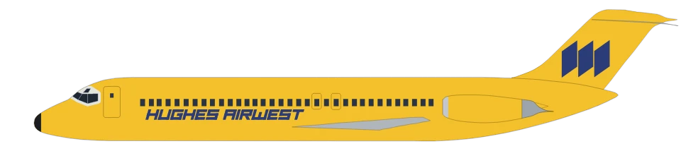

Hughes Airwest in 1979
Hughes Airwest flew 2,357 flights a week in 1979. Its busiest airports were Phoenix, Las Vegas and Seattle. Here are its routes and its planes from that year's timetable.
Hughes Airwest was gone by 1985, so on Ghostflights it flies its 1979 schedule.

Paint: Sundance yellow (1979). Open Liveries drew it from dated photos.
Busiest airports
| Airport | Departures a week |
|---|---|
| Phoenix (PHX) | 320 |
| Las Vegas (LAS) | 242 |
| Seattle (SEA) | 153 |
| Tucson (TUS) | 139 |
| Salt Lake City (SLC) | 119 |
| Boise (BOI) | 105 |
| Eugene (EUG) | 98 |
| Los Angeles (LAX) | 98 |
Planes
| Type | Flights a week |
|---|---|
| DC-9 | 1,541 |
| DC-9 | 574 |
| 727 | 242 |
Routes
These are all the city pairs Hughes Airwest flew. Both directions count together.
| Route | Planes | Flights a week |
|---|---|---|
| Phoenix – Tucson | DC-9, 727 | 116 |
| Las Vegas – Phoenix | DC-9, 727 | 85 |
| Pasco – Yakima | DC-9 | 70 |
| Las Vegas – Orange County | DC-9 | 68 |
| Phoenix – Orange County | DC-9 | 68 |
| Spokane – Seattle | DC-9 | 63 |
| Burbank – Las Vegas | DC-9 | 57 |
| Los Angeles – Tucson | DC-9 | 56 |
| Phoenix – Salt Lake City | DC-9, 727 | 56 |
| Seattle – Yakima | DC-9 | 56 |
| Burbank – Phoenix | DC-9 | 55 |
| Las Vegas – Ontario | DC-9 | 43 |
| Denver – Salt Lake City | DC-9 | 42 |
| Eugene – San Francisco | DC-9 | 42 |
| Eugene – Pasco | DC-9 | 42 |
| Phoenix – San Jose | DC-9, 727 | 42 |
| Oakland – Seattle | 727, DC-9 | 41 |
| Ontario – Phoenix | DC-9 | 41 |
| Burbank – Salt Lake City | DC-9 | 35 |
| Oakland – Phoenix | 727, DC-9 | 35 |
| Redding – San Francisco | DC-9 | 35 |
| Boise – Twin Falls | DC-9 | 28 |
| Boise – Portland | DC-9 | 28 |
| Boise – Seattle | DC-9 | 28 |
| Boise – Denver | DC-9 | 28 |
| Burbank – Denver | DC-9 | 28 |
| Denver – Las Vegas | DC-9 | 28 |
| Eugene – Los Angeles | DC-9 | 28 |
| Eugene – Seattle | DC-9 | 28 |
| Eugene – Redmond | DC-9 | 28 |
| Fresno – Sacramento | DC-9 | 28 |
| Houston Hobby – Las Vegas | DC-9 | 28 |
| Houston Hobby – Tucson | DC-9 | 28 |
| Idaho Falls – Pocatello | DC-9 | 28 |
| Los Angeles – San Francisco | DC-9 | 28 |
| Los Angeles – Palm Springs | DC-9 | 28 |
| Orange County – Tucson | DC-9 | 28 |
| Reno – Seattle | DC-9, 727 | 28 |
| Salt Lake City – Orange County | DC-9 | 28 |
| Salt Lake City – Twin Falls | DC-9 | 28 |
| Seattle – San Jose | DC-9, 727 | 28 |
| Seattle – Salt Lake City | 727, DC-9 | 28 |
| Spokane – Los Angeles | DC-9 | 28 |
| Eureka – San Francisco | DC-9 | 21 |
| Eureka/Arcata Airport – San Francisco | DC-9 | 21 |
| Houston Hobby – Phoenix | DC-9 | 21 |
| Kalispell – Spokane | DC-9 | 21 |
| Las Vegas – Oakland | DC-9, 727 | 21 |
| Las Vegas – San Jose | DC-9, 727 | 21 |
| Las Vegas – Reno | DC-9 | 21 |
| Spokane – Calgary | DC-9 | 21 |
| Las Vegas – Tucson | 727, DC-9 | 20 |
| Des Moines – Milwaukee | DC-9 | 18 |
| Des Moines – Phoenix | DC-9 | 17 |
| Boise – Reno | DC-9 | 14 |
| Boise – Idaho Falls | DC-9 | 14 |
| Boise – Pasco | DC-9 | 14 |
| Boise – Salt Lake City | DC-9 | 14 |
| Boise – Pocatello | DC-9 | 14 |
| Boise – Spokane | DC-9 | 14 |
| Boise – Eugene | DC-9 | 14 |
| Denver – Idaho Falls | DC-9 | 14 |
| Eugene – Portland | DC-9 | 14 |
| Fresno – Phoenix | DC-9 | 14 |
| Fresno – Las Vegas | DC-9 | 14 |
| Grand Canyon – Phoenix | DC-9 | 14 |
| Grand Canyon – Las Vegas | DC-9 | 14 |
| Las Vegas – San Francisco | DC-9 | 14 |
| Las Vegas – Sacramento | DC-9 | 14 |
| Las Vegas – Palm Springs | DC-9 | 14 |
| Los Angeles – San Diego | DC-9 | 14 |
| Milwaukee – Phoenix | DC-9 | 14 |
| Pasco – San Francisco | DC-9 | 14 |
| Phoenix – Sacramento | DC-9 | 14 |
| Phoenix – Reno | 727, DC-9 | 14 |
| San Diego – Tucson | DC-9 | 14 |
| San Francisco – Tucson | DC-9 | 12 |
| Las Vegas – Calgary | 727, DC-9 | 7 |
| Los Angeles – Calgary | DC-9 | 7 |
| Mazatlan – Phoenix | 727 | 7 |
| Oakland – San Jose | 727, DC-9 | 7 |
| San Francisco – Calgary | DC-9 | 7 |
| Seattle – Sacramento | DC-9 | 7 |
| La Paz – Tucson | DC-9 | 4 |
| San Jose Del Cabo – Tucson | DC-9 | 4 |
Look up with Skyarium
Ghostflights is a station in Skyarium's world. Skyarium is a planetarium for plane spotting on your iPhone. It shows the real planes over you in the sky from where you stand. Get Skyarium on the App Store
Where this comes from
Source: Official Airline Guide, North American Edition, November 15, 1979. Ghostflights flies them again on today's date at their printed times. The planes' positions are simulated. More about Ghostflights.